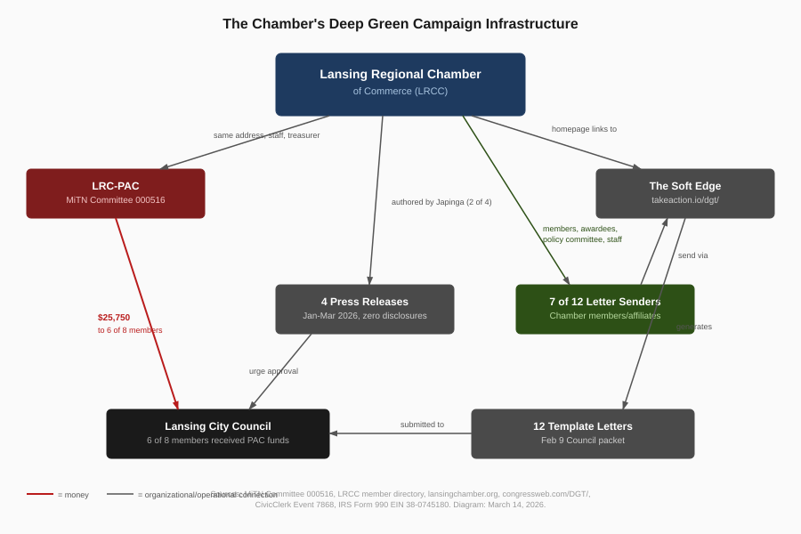

Lansing: How Organic Is the Support for Deep Green?
"As a member of the local business community, I am writing to express my strong support..."
Steve Japinga, Senior Vice President of Public Affairs, Lansing Regional Chamber of Commerce; LRC-PAC operational contact (MiTN Committee 000516). Template letter sent via The Soft Edge to Lansing City Council, February 2026.
LANSING, Mich. -- All 12 template support letters submitted to the Lansing City Council for the Deep Green data center rezoning were generated through The Soft Edge, a paid advocacy platform. Seven of the 12 senders have documented ties to the Lansing Regional Chamber of Commerce: members, award recipients, policy committee participants, and the Chamber's own Senior Vice President of Public Affairs. The Chamber published four press releases supporting the project between January and March 2026 without disclosing these connections, and its homepage links directly to the campaign that generated the letters.
Who Sent the Letters
Connections were verified through the LRCC member directory at members.lansingchamber.org, LRCC press releases, and the 2025 LRCC Policy Committee roster (downloaded from lansingchamber.org/about-us/, March 14, 2026).
| Sender | Organization | Chamber Connection | Loopback |
|---|---|---|---|
| Steve Japinga | LRCC | SVP of Public Affairs; LRC-PAC operational contact (MiTN Committee 000516); $108,646/year (IRS 990, FY2021) | Yes |
| Jane Mitchell | Jungle Jane Promotions | LRCC member; 2024 ATHENA Leadership Award recipient; 2012 ATHENA PowerLink recipient | No |
| Joseph Campbell | Capitol National Bank | President; Capitol National Bank is LRCC member | No |
| Mark McDaniel | Cinnaire | LRCC member; 2026 LRCC Community Service Award recipient (est. 1948), presented Feb 25, 2026 | No |
| Megan Doherty | F.D. Hayes Electric | LRCC member; 2025 LRCC Policy Committee (Small Business/Professional Trades) | Yes |
| Jim Baker | Innovare | LRCC member | Yes |
| Dustin Howard | UA Local 333 | Business Manager; Local 333 is LRCC member; quoted in Chamber's Feb 10 press release | No |
The remaining five senders have no confirmed Chamber connection: Michael Hull (Superior Electric), Peter Campbell, Marchon Holmes (Jackson, Mich.), Aaron Helman (Ionia, Mich.), and Gordon VanWieren (Okemos, Mich.). But four of the five are not organic either. All except Hull show the loopback email pattern (mailagent@thesoftedge.com), meaning they were enrolled by the campaign administrator rather than finding the form and signing up on their own. Three listed addresses outside Lansing.

congressweb.com/DGT/, and CivicClerk Event 7868.In total, 7 of 12 senders (58%) have documented Chamber ties. Four of those seven also show the loopback pattern (Japinga, Doherty, Baker, and one of the five without confirmed connections). The Chamber-connected senders span the organization's membership, its awards program, its policy governance, and its staff.
The Award Recipient and the Policy Committee Member
Mark McDaniel was announced as the Chamber's 2026 Community Service Award recipient in late January 2026. The award is the LRCC's oldest honor, established in 1948, and was presented at the 125th Anniversary Gala on February 25, 2026. His Soft Edge template letter was sent approximately two weeks after the award announcement and three weeks before the gala. He did not identify himself as a Chamber award recipient in his letter.
Megan Doherty sits on the 2025 LRCC Policy Committee representing the Small Business/Professional Trades sector. Her letter shows the loopback email pattern (mailagent@thesoftedge.com), meaning she was enrolled by the campaign administrator. She did not identify herself as a Chamber policy committee member in her letter.
Dustin Howard, UA Local 333's Business Manager, sent a Soft Edge template letter from dustin@local333.com on February 3, 2026. Seven days later, the Chamber quoted him by name in its "Labor and Business Leaders Unite" press release: "The Deep Green data center project means real jobs for local skilled trades workers." His press release quote echoes the language in his template letter. Neither the letter nor the press release discloses the other.
Four Press Releases, No Disclosures
The Chamber published four articles about the Deep Green project between January 8 and March 4, 2026. Two were authored by Steve Japinga (per page metadata at lansingchamber.org). None discloses any of the following:
| Undisclosed | Why It Matters |
|---|---|
| LRC-PAC contributed $30,750 to 6 of 8 sitting Council members | All four articles urge Council to approve the project |
| Japinga (author of two articles) manages LRC-PAC operations | No separation between the articles' author and the PAC that funds the officials |
| Japinga submitted a Soft Edge template letter as "a member of the local business community" | The author of Chamber press releases also participated in the template letter campaign without identifying himself |
| 7 of 12 letter senders are Chamber members or affiliates | The letters were presented to Council as independent community support |
| The Chamber homepage links to the Soft Edge campaign | The articles direct readers to a website that hosts an undisclosed advocacy tool |
On February 10, the Chamber published its "Labor and Business Leaders Unite" press release announcing support from "13 labor organizations." That same day, nearly 200 residents attended the City Council meeting, with the vast majority opposing the project. The Chamber article does not mention the meeting or the opposition.
Methodology
Chamber member connections were verified through the LRCC member directory at members.lansingchamber.org (captured March 14, 2026), the 2025 LRCC Policy Committee roster PDF (downloaded from lansingchamber.org/about-us/, March 14, 2026), LRCC press releases, and LRCC award announcements. The Soft Edge campaign page source was captured from congressweb.com/DGT/1 and archived to the Wayback Machine on March 14, 2026. The Chamber homepage link was identified by extracting the full HTML source of lansingchamber.org via curl on March 14, 2026. The promotional image upload date was determined from HTTP headers (curl -sI). Email header forensics were performed on the original PDF attachments from the Lansing City Council February 9, 2026 meeting packet. Press release authorship was determined from schema.org author fields in the Chamber website HTML. LRC-PAC campaign finance data is from MiTN Committee 000516.